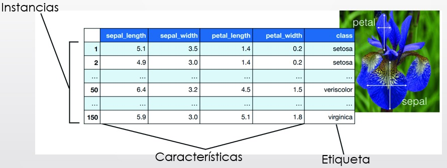
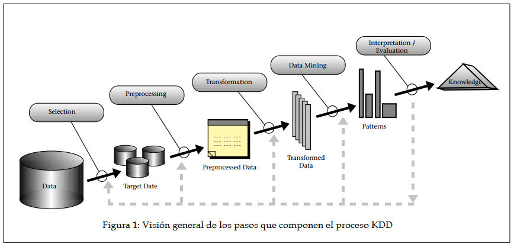

La minería de datos es una técnica muy poderosa que se utiliza para
extraer información valiosa y oculta
a partir de grandes conjuntos de datos. Es como buscar oro en una
montaña de arena, pero en lugar de oro, encontramos patrones,
tendencias y relaciones que pueden ser muy útiles para tomar
decisiones.
La minería de datos basicamente nos permite:
Limpiar los datos de ruido y repeticiones.
Extraer la información relevante y utilizarla para evaluar posibles
resultados.
Tomar mejores decisiones de negocio con mayor rapidez.
Conceptos Básicos
Para entender la minería de datos, es importante conocer algunos
conceptos básicos:
Dataset:También llamado conjunto de datos o base de datos. Es una colección de datos u observaciones relacionadas a un problema determinado
Datos:Hechos que describen características de objetos, eventos o personas. Es la materia prima de la cual se obtendra la información.
Información:Datos procesados y presentados en forma adecuada, de interés para un observador en un tiempo determinado.
Conocimiento:Información procesada para emitir juicios que llevan a conclusiones.
Algoritmo:Secuencia de operaciones que resuelven un conjunto de problemas y que involucran el procesamiento de datos, el cálculo de operaciones matemáticas o la prediccion de resultados basados en evidencia.
Rendimiento:Tambien llamado performance o desempeño. Es un valor numérico que mide la capacidad de un modelo o algoritmo de mineria de datos para reconocer patrones (clases, predicciones, grupos, etc.) en los datos.
Parámetros:Valores que influyen en el comportamiento y desempeño de un modelo de minería de datos.
Sesgo:Es una distorción que se produce en cualquier parte del proceso KDD debido a la forma en que se toman decisiones en el proceso.
Características:También llamado feature, variable o atributo. Representan las propiedades de un objeto en un dataset. Pueden ser observables y no observables
Instancias:También llamadas observaciones o registros. Es el conjunto de distintas características asociadas al mismo objeto.

Proceso KDD
KDD o Know Discovery in Databases (Descubrimiento de Conocimiento en Bases de datos), es el
proceso de encontrar patrones útiles y conocimientos a partir de grandes cantidades de datos.
La importancia del proceso KDD radica en su capacidad para transformar grandes volúmenes de datos en conocimiento valioso y accionable. En un mundo impulsado por datos,
KDD permite a las organizaciones descubrir patrones ocultos, tendencias y relaciones significativas que pueden informar decisiones estratégicas, optimizar procesos, mejorar la eficiencia operativa
y generar ventajas competitivas. Al convertir datos en información útil KDD ayuda a las empresas a innovar, preever problemas o oportunidades y responder de manera más efectiva a las necesidades del mercado y de sus clientes.
Etapas del Proceso KDD
En lo que respecta a las fases del proceso KDD, consta de las siguientes:
Selección:
Se seleccionan los datos relevantes para el análisis a partir de una o varias fuentes de datos.
Preprocesamiento:
Preparación y limpieza de los datos extraídos desde las distintas fuentes de datos en una forma manejable, necesaria para las fases posteriores.
Transformación:
Se transforman los datos en una forma adecuada para su posterior análisis.
Minería de datos:
Tratamos de aplicar métodos eficaces con el objetivo de extraer patrones previamente desconocidos o nuevos, para averiguar contenidos ocultos en los datos.
Evaluación e implantación:
En esta última fase, se evalúan los resultados obtenidos y se implantan las soluciones encontradas.

algun titulo
hay que agregar big data, datawarehouse o procesos etl?
hay que agregar reglas de inferencia rudimentaria?